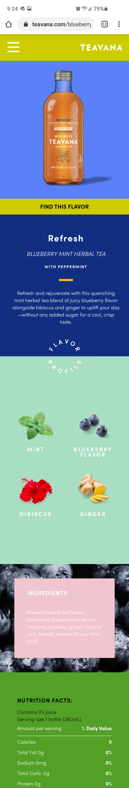

Alignment
Shopify
shopify.comAlignment is an important part of design. Proper alignment makes all information on the webpage feel cohesive, causing the viewer to feel calm and happy. This website demonstrates the proper alignment. By having all important information and the articles left aligned, the information on the webpage flows.
Contrast
Teavana
teavana.com
This website utilizes contrast so well! The fun colored blocks help organize the information in a readable way that is interesting to the viewer. The text is readable on the blocks, and the pictures help to add to the overall feel of the website.
White space
Apple
apple.comWhite space is very important in web design. White space helps to keep the information organized so that the viewer feels comfortable on your site. This website does a great job at keeping a white space around products and information so that the viewer feels calm. This helps to keep the viewer's eyes on your page.